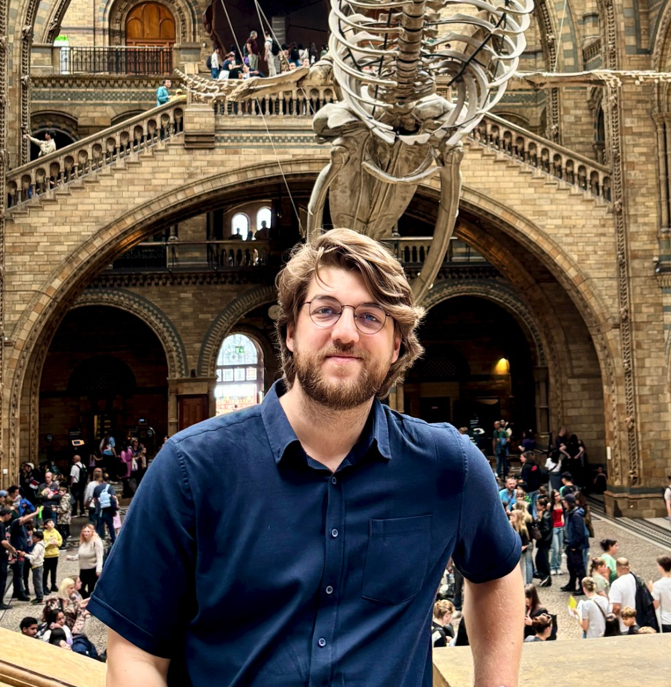

Hi, I'm Doruk Topcu
Computer Engineering PhD candidate at Hacettepe University specializing in Machine Learning, Bioinformatics, and Computer Vision. IEEE published researcher with extensive full-stack QA leadership & LLM platform scaling experience.

Featured Publication
Journal paper published in IEEE Transactions on Computational Biology and Bioinformatics
ASAP-ML: Antibiotic Susceptibility and Antibiogram Prediction With Machine Learning Methods
Career & Education
Academic research milestones and software engineering leadership
QA Lead & Scrum Master (Former Founding Dev)
- Founding core team member on Snapshot AI (Sep 2022 – Jun 2026), building full-stack data ingestion pipelines connecting Git repositories and project management systems into LLM RAG models.
- Grew into QA Lead, directing release quality, defect triage, and automated testing strategy across the platform lifecycle.
- Served as Scrum Master (2025–2026), managing sprint execution for a cross-functional engineering team that scaled to 17 members.
- Led live customer demos, gathering feedback and orchestrating targeted integration features.
Motorsports Marshal
- Managed racetrack safety logistics, quick incident response, and signal communication during official motorsport championship events.
Projects Showcase
Explore 50+ repositories across AI research, computer vision, web applications, and IoT
Skills & Certifications
Technical domain expertise and 28+ verified industry certifications
Featured Industry Certifications
Beyond the Code
Sports, community leadership, and personal passions
American Football
Former active player for Hacettepe Red Deers (2015–2016). Teamwork, discipline, and high-intensity strategy.
Motorsports Marshal
Official marshal for Ankara Gözetmen Kurulu, managing track safety and race communications during rally and circuit events.
Breathwork & Wellness
Developer of DerinBirNefes, combining respiratory research into digital mindfulness tools.
Pet Care & Rescue
Creator of Sahiplendir pet adoption platform and daily pet schedule reminders.